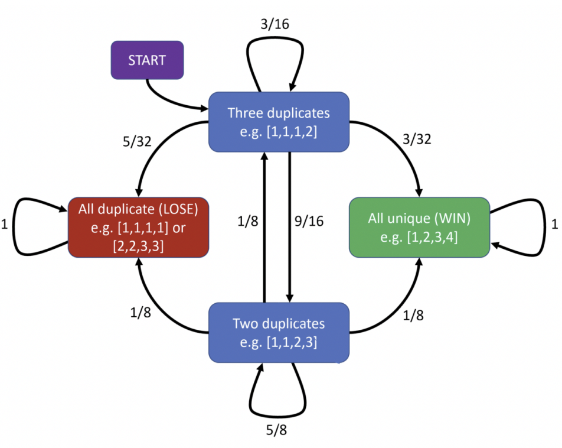

Hitting Times
Note: This is not a real problem set from the class. All of these questions are ones that I either wrote myself or found online or from textbooks. I made these to help supplement my learning and get in extra practice.
This is the problem set we investigate more probabilistic techniques we can use Markov chains for, in particular, looking at expectation and how we can predict the behaviour of Markov chains. You can access a pdf of the problem set Here, with the pdf of solutions Here.
Problem 1: Add-Drop Dilemma
Bob is currently a student enrolled in Math 447. However, during the add-drop period, he is manically changing his course schedule every day. On each day that he is a Math 447 student, he has a probability of $1/2$ of being a Math 447 the next day. Otherwise, he has an equally likely chance of dropping Math 447 and becoming a Math 547 student, a Math 463 student, a Math 324 student, or a Math 319 student the next day. On any day that he is a Math 463 student, he has a probability of $1/4$ of switching to Math 324, a probability of $3/8$ of switching to Math 447, and a probability of $3/8$ of switching to Math 547 the next day. On any day he is a Math 547 student, he has a probability of $1/2$ of switching to Math 319, a probability of $3/8$ of switching to Math 447, and a probability of $1/8$ of switching to Math 463 the next day.
Calculate each of the following quantities, assuming that when we start observing the chain, it is already in steady-state.
For each question, assume that Bob will be a student forever, and he is able to change his course everyday while he is a student. Also, for parts (a)-(f), assume that if Bob switches to Math 324 or Math 319, he will stay there and will not change his course again.
- What is the probability that he will eventually leave any 400-level course?
- What is the probability that he will eventually be in Math 319?
- What is the expected number of days until he leaves any 400-level course?
- Every time he switches into Math 447 from Math 547 or Math 463, he buys himself an ice cream cone at Frostbite. However, he can only afford so much ice cream, so after he's eaten 2 ice cream cones, he stops buying himself ice cream. What is the expected number of ice cream cones he buys himself before he leaves any 400-level course?
- His friend Joe started out just like Bob. He is now in Math 319. You don't know how long it took him to switch. What is the expected number of days it took him to switch to Math 319?
- Bob decides that Math 319 is not in his future. Accordingly, when he is a Math 447 student, he stays in Math 447 for another day with probability $1/2$, and otherwise he has an equally likely chance of switching into any of the other options. When he is a Math 547 student, his probability of entering Math 447 or Math 463 are in the same proportion as before. What is the expected number of days until he is in Math 324?
- For this part only, assume that when Bob is in Math 324, he is equally likely to stay in Math 324 or switch to Math 319. Similarly, if he is Math 319, he is equally likely to stay in Math 319, or switch to Math 324. Calculate the probability that Bob being in each course on any given day far into the future.
- Suppose that if he is in Math 324 or Math 319, he has probability of $1/8$ of returning to Math 447, and otherwise he remains in his current course. What is the expected number of days until he is Math 447 again? (Note that we know today he is Math 447, so if tomorrow he is still in Math 447, then the number of days until he is Math 447 again is $1$).
Solution
- Under construction
$\color{white}.\color{black}$
Problem 2: 4-Sided Dice Game
Suppose you have four fair tetrahedral dice whose four sides are numbered from $1$ through $4$.
You play a game in which you roll them all and divide them into two groups: those whose values are unique, and those which are duplicates. For example, if you roll a $1$, $2$, $2$ and $4$, then the $1$ and $4$ will go into the "unique" group, while the $2$'s will go into the "duplicate" group.
Next, you re-roll all the dice in the duplicate pool and sort all the dice again. Continuing the previous example, that would mean you re-roll the $2$'s. If the result happens to be $1$ and $3$, then the "unique" group will now consist of $3$ and $4$, while the “duplicate” group will have two $1$'s.
You continue re-rolling the duplicate pool and sorting all the dice until all the dice are members of the same group. If all four dice are in the "unique" group, you win. If all four are in the "duplicate" group, you lose.
What is your probability of winning the game?
Solution
We can view this game as a Markov chain. At any point in time, we are in a particular state of the game, and when we re-roll the dice, we transition to a different state. Although there are many possible states (one for each possible way of rolling the four dice), we can use symmetry arguments to reduce the total states to just four. Here they are:
- All dice are duplicates. This includes cases like $(1,1,1,1)$ but also $(2,2,3,3)$. If we ever arrive at this position, the game ends and we lose.
- Three dice are duplicates. For example: $(1,1,1,2)$
- Two dice are duplicates. For example: $(1,1,2,3)$
- No dice are duplicates. For example: $(1,2,3,4)$. If we ever arrive at this position, the game ends and we win.
We can associate each state transition with a probability. For example, suppose we roll $(1,1,2,3)$. We are in the "two-duplicate" state. We must re-roll the two $1$’s, and four things could happen:
- We roll $(2,2)$ or $(3,3)$ (probability $1/8$). We now have $3$ duplicates and the game continues.
- We roll $(2,3)$ or $(3,2)$ (probability $1/8$). We now have $4$ duplicates and the game ends (we lose).
- We roll $(1,4)$ or $(4,1)$ (probability $1/8$). We now have no duplicates and the game ends (we win).
- We roll anything else (probability $5/8$). We have $2$ duplicates again and the game continues.
If we continue in this manner and find all possible transition probabilities between all four states, we obtain the following diagram:
We can think of the "three duplicates" state as our start state. Why? Because we start the game by rolling all four dice. This is mathematically equivalent to rolling three dice, since the value of the die we don’t roll might as well have been our first roll (all numbers are equivalent by symmetry). Therefore, we can represent our transitions as follows:
$$A=\renewcommand\arraystretch{1.5}\begin{bmatrix}\renewcommand\arraystretch{2} 1 & \frac{5}{32} & \frac 18 & 0 \\ 0 & \frac{3}{16} & \frac 18 & 0 \\ 0 & \frac{9}{16} & \frac 58 & 0 \\ 0 & \frac{3}{32} & \frac 18 & 1 \end{bmatrix},\;\;\;\;x_0=\begin{bmatrix} 0 \\ 1 \\ 0 \\ 0 \end{bmatrix}$$Notice that all columns sum to 1 since the sum of probabilities from every node along outgoing edges must sum to 1. We can view our current state distribution as a column vector that sums to 1. For example, our initial state is given by $x_0$ above, since we start in the "three-duplicate" state with probability $1$. Every time we transition to a new state, our new distribution can be found by multiplying our current state by $A$. In other words:
$$x_{k+1}=Ax_k,\;\;\;\;\text{for }k=0,1,\dots$$The question is: where will we end up on average? This is equivalent to asking for the limit
$$x_{\infty}=\lim_{k\rightarrow \infty}A^kx_0$$We can find this limit by performing an eigenvalue decomposition, as seen in class:
\begin{align*} A & = V\Lambda V^{-1} \\ & = \renewcommand\arraystretch{1.5}\begin{bmatrix}\renewcommand\arraystretch{2} 0 & 1 & \frac{23}{21} & -1 \\ 0 & 0 & -\frac{8}{21} & 30 \\ 0 & 0 & -\frac{12}{7} & -30 \\ 1 & 0 & 1 & 1 \end{bmatrix} \renewcommand\arraystretch{1.5}\begin{bmatrix}\renewcommand\arraystretch{2} 1 & 0 & 0 & 0 \\ 0 & 1 & 0 & 0 \\ 0 & 0 & \frac 34 & 0 \\ 0 & 0 & 0 & \frac{1}{16} \end{bmatrix} \renewcommand\arraystretch{1.5}\begin{bmatrix}\renewcommand\arraystretch{2} 0 & \frac{9}{20} & \frac{29}{60} & 1 \\ 1 & \frac{11}{20} & \frac{31}{60} & 0 \\ 0 & -\frac{21}{44} & -\frac{21}{44} & 0 \\ 1 & \frac{3}{110} & -\frac{1}{165} & 0 \end{bmatrix} \end{align*}And the limit therefore:
\begin{align*} A^{\infty}x_0 & = V\Lambda^{\infty}V^{-1}x_0 \\ & = \renewcommand\arraystretch{1.5}\begin{bmatrix}\renewcommand\arraystretch{2} 0 & 1 & \frac{23}{21} & -1 \\ 0 & 0 & -\frac{8}{21} & 30 \\ 0 & 0 & -\frac{12}{7} & -30 \\ 1 & 0 & 1 & 1 \end{bmatrix} \renewcommand\arraystretch{1.5}\begin{bmatrix}\renewcommand\arraystretch{2} 1 & 0 & 0 & 0 \\ 0 & 1 & 0 & 0 \\ 0 & 0 & 0 & 0 \\ 0 & 0 & 0 & 0 \end{bmatrix} \renewcommand\arraystretch{1.5}\begin{bmatrix}\renewcommand\arraystretch{2} 0 & \frac{9}{20} & \frac{29}{60} & 1 \\ 1 & \frac{11}{20} & \frac{31}{60} & 0 \\ 0 & -\frac{21}{44} & -\frac{21}{44} & 0 \\ 1 & \frac{3}{110} & -\frac{1}{165} & 0 \end{bmatrix} \begin{bmatrix} 0 \\ 1 \\ 0 \\ 0 \end{bmatrix} \\ & = \begin{bmatrix} 0 & 1 \\ 0 & 0 \\ 0 & 0 \\ 1 & 0 \end{bmatrix} \renewcommand\arraystretch{1.5}\begin{bmatrix} 0 & \frac{9}{20} & \frac{29}{60} & 1 \\ 1 & \frac{11}{20} & \frac{31}{60} & 0 \end{bmatrix} \begin{bmatrix} 0 \\ 1 \\ 0 \\ 0 \end{bmatrix} \\ & = \renewcommand\arraystretch{1.5}\begin{bmatrix} \frac{11}{20} \\ 0 \\ 0 \\ \frac{9}{20} \end{bmatrix} \end{align*}In other words, there is a $11/20$, or $55\%$ chance that we will lose and end up in the "all duplicate" case, and a $9/20$, or $45\%$ chance that we will win and end up in the "all unique" case.
$\color{white}.\color{black}$
Problem 3: A Lazy Chain
Suppose that $P$ is a transition probability matrix of an ergodic chain with unique stationary distribution $\pi$. Let $p\in (0,1)$ and $\tilde{P}$ be the lazy chain with transition probability matrix $\tilde{P}=pP+(1-p)\text{Id}$. Suppose $a$ is a recurrent state. Let $R_a$ and $\tilde{R}_a$ be the first return times of the chain to state $a$. Let $S_a$ and $\tilde{S}_a$ be the first time which is $2$ or \textit{larger} that the chain returns to state $a$.
- Compute $\mathbb{E}\left(R_a\right)$ and $\mathbb{E}(\tilde{R}_a)$ in terms of $\pi(a)$ and $p$.
- Compute $\mathbb{E}\left(S_a\right)$ and $\mathbb{E}(\tilde{S}_a)$ in terms of $\pi(a)$, $p$, and $P_{aa}$.
- If it takes, in expectation 4 steps to get from state $a$ to state $b$ in the chain $P$, how long should it take to get from $a$ to $b$ in the lazy chain $\tilde{P}$? Explain your answer. You may prove it, but this is not required.
Solution
- Under construction.